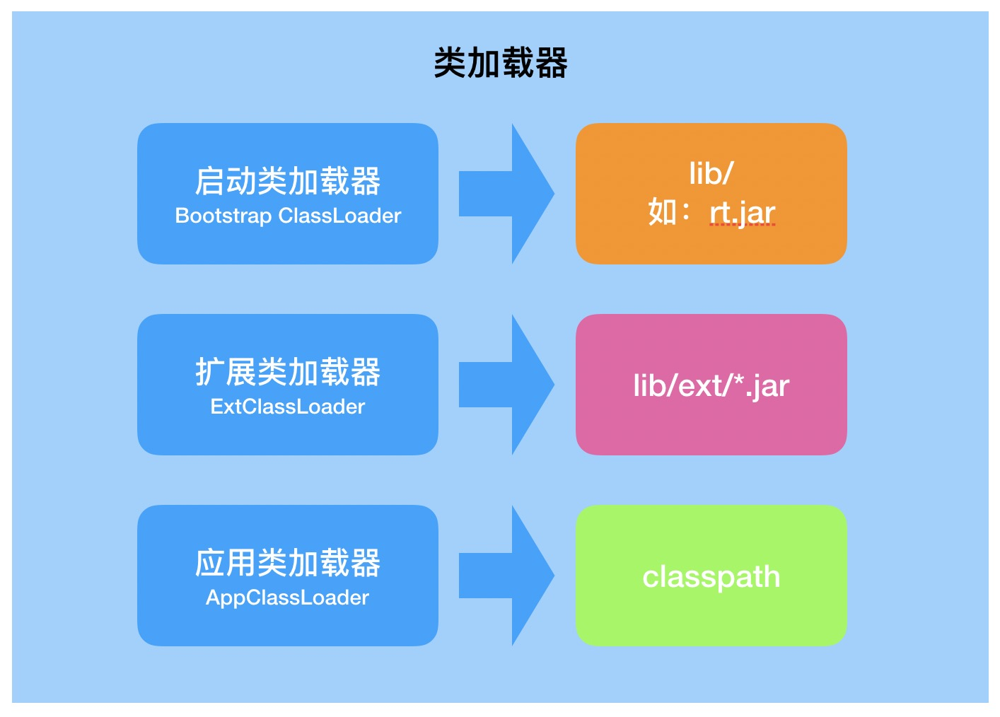
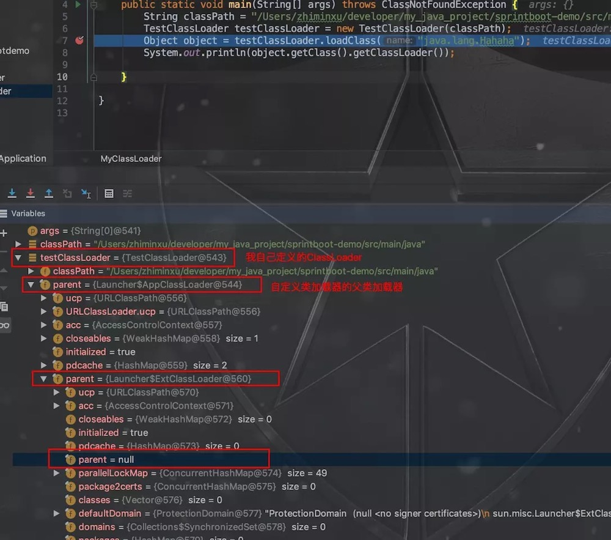
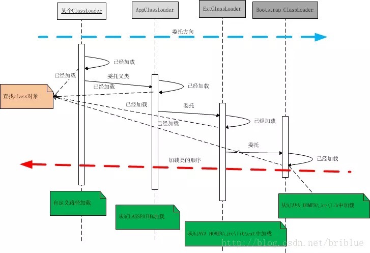
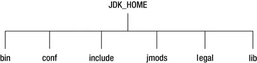
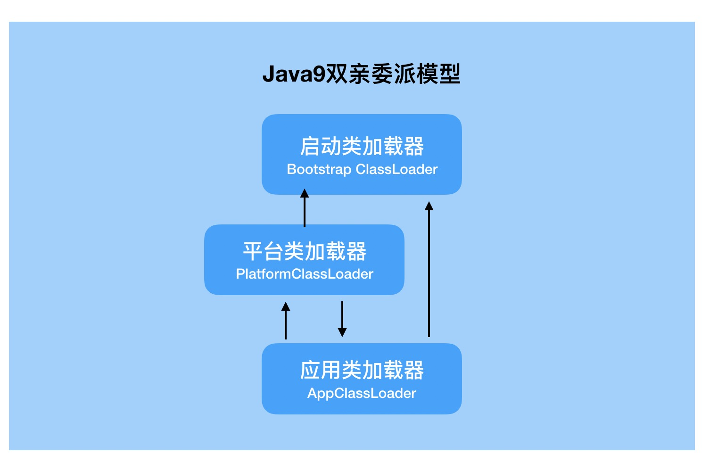

原文连接:https://www.cnblogs.com/secbro/p/11759046.html
所谓的类加载器（Class Loader）就是加载Java类到Java虚拟机中的，前面《面试官，不要再问我“Java虚拟机类加载机制”了》中已经介绍了具体加载class文件的机制。本篇文章我们重点介绍加载器和双亲委派机制。
类加载器
在JVM中有三类ClassLoader构成：启动类（或根类）加载器（Bootstrap ClassLoader）、扩展类加载器（ExtClassLoader）、应用类加载器（AppClassLoader）。不同的类加载器负责不同区域的类的加载。

启动类加载器：这个加载器不是一个Java类，而是由底层的c++实现，负责将存放在JAVA_HOME下lib目录中的类库，比如rt.jar。因此，启动类加载器不属于Java类库，无法被Java程序直接引用，用户在编写自定义类加载器时，如果需要把加载请求委派给引导类加载器，那直接使用null代替即可。
扩展类加载器：由sun.misc.Launcher$ExtClassLoader实现，负责加载JAVA_HOME下lib\ext目录下的，或者被java.ext.dirs系统变量所指定的路径中的所有类库，开发者可以直接使用扩展类加载器。
应用类加载器：由sun.misc.Launcher$AppClassLoader实现的。由于这个类加载器是ClassLoader中的getSystemClassLoader方法的返回值，所以也叫系统类加载器。它负责加载用户类路径上所指定的类库，可以被直接使用。如果未自定义类加载器，默认为该类加载器。
可以通过这种方式打印加载路径及相关jar：
System.out.println("boot:" + System.getProperty("sun.boot.class.path"));
System.out.println("ext:" + System.getProperty("java.ext.dirs"));
System.out.println("app:" + System.getProperty("java.class.path"));在打印的日志中，可以看到详细的路径以及路径下面都包含了哪些类库。由于打印内容较多，这里就不展示了。
类加载器的初始化
除启动类加载器外，扩展类加载器和应用类加载器都是通过类sun.misc.Launcher进行初始化，而Launcher类则由根类加载器进行加载。相关代码如下：
public Launcher() {
Launcher.ExtClassLoader var1;
try {
//初始化扩展类加载器，构造函数没有入参，无法获取启动类加载器
var1 = Launcher.ExtClassLoader.getExtClassLoader();
} catch (IOException var10) {
throw new InternalError("Could not create extension class loader", var10);
}
try {
//初始化应用类加载器，入参为扩展类加载器
this.loader = Launcher.AppClassLoader.getAppClassLoader(var1);
} catch (IOException var9) {
throw new InternalError("Could not create application class loader", var9);
}
// 设置上下文类加载器
Thread.currentThread().setContextClassLoader(this.loader);
//...
}双亲委派模型
双亲委派模型：当一个类加载器接收到类加载请求时，会先请求其父类加载器加载，依次递归，当父类加载器无法找到该类时（根据类的全限定名称），子类加载器才会尝试去加载。

双亲委派中的父子关系一般不会以继承的方式来实现，而都是使用组合的关系来复用父加载器的代码。
通过编写测试代码，进行debug，可以发现双亲委派过程中不同类加载器之间的组合关系。

而这一过程借用一张时序图来查看会更加清晰。

ClassLoader#loadClass源码
ClassLoader类是一个抽象类，但却没有包含任何抽象方法。继承ClassLoader类并重写findClass方法便可实现自定义类加载器。但如果破坏上面所述的双亲委派模型来实现自定义类加载器，则需要继承ClassLoader类并重写loadClass方法和findClass方法。
ClassLoader类的部分源码如下：
protected Class<?> loadClass(String name, boolean resolve)throws ClassNotFoundException{
//进行类加载操作时首先要加锁，避免并发加载
synchronized (getClassLoadingLock(name)) {
//首先判断指定类是否已经被加载过
Class<?> c = findLoadedClass(name);
if (c == null) {
long t0 = System.nanoTime();
try {
if (parent != null) {
//如果当前类没有被加载且父类加载器不为null，则请求父类加载器进行加载操作
c = parent.loadClass(name, false);
} else {
//如果当前类没有被加载且父类加载器为null，则请求根类加载器进行加载操作
c = findBootstrapClassOrNull(name);
}
} catch (ClassNotFoundException e) {
}
if (c == null) {
long t1 = System.nanoTime();
//如果父类加载器加载失败，则由当前类加载器进行加载，
c = findClass(name);
//进行一些统计操作
// ...
}
}
//初始化该类
if (resolve) {
resolveClass(c);
}
return c;
}
}上面代码中也提现了不同类加载器之间的层级及组合关系。
为什么使用双亲委派模型
双亲委派模型是为了保证Java核心库的类型安全。所有Java应用都至少需要引用java.lang.Object类，在运行时这个类需要被加载到Java虚拟机中。如果该加载过程由自定义类加载器来完成，可能就会存在多个版本的java.lang.Object类，而且这些类之间是不兼容的。
通过双亲委派模型，对于Java核心库的类的加载工作由启动类加载器来统一完成，保证了Java应用所使用的都是同一个版本的Java核心库的类，是互相兼容的。
上下文类加载器
子类加载器都保留了父类加载器的引用。但如果父类加载器加载的类需要访问子类加载器加载的类该如何处理？最经典的场景就是JDBC的加载。
JDBC是Java制定的一套访问数据库的标准接口，它包含在Java基础类库中，由根类加载器加载。而各个数据库厂商的实现类库是作为第三方依赖引入使用的，这部分实现类库是由应用类加载器进行加载的。
获取Mysql连接的代码：
//加载驱动程序
Class.forName("com.mysql.jdbc.Driver");
//连接数据库
Connection conn = DriverManager.getConnection(url, user, password);DriverManager由启动类加载器加载，它使用到的数据库驱动（com.mysql.jdbc.Driver）是由应用类加载器加载的，这就是典型的由父类加载器加载的类需要访问由子类加载器加载的类。
这一过程的实现，看DriverManager类的源码：
//建立数据库连接底层方法
private static Connection getConnection(
String url, java.util.Properties info, Class<?> caller) throws SQLException {
//获取调用者的类加载器
ClassLoader callerCL = caller != null ? caller.getClassLoader() : null;
synchronized(DriverManager.class) {
//由启动类加载器加载的类，该值为null，使用上下文类加载器
if (callerCL == null) {
callerCL = Thread.currentThread().getContextClassLoader();
}
}
//...
for(DriverInfo aDriver : registeredDrivers) {
//使用上下文类加载器去加载驱动
if(isDriverAllowed(aDriver.driver, callerCL)) {
try {
//加载成功，则进行连接
Connection con = aDriver.driver.connect(url, info);
//...
} catch (SQLException ex) {
if (reason == null) {
reason = ex;
}
}
}
//...
}
}在上面的代码中留意改行代码：
callerCL = Thread.currentThread().getContextClassLoader();这行代码从当前线程中获取ContextClassLoader，而ContextClassLoader在哪里设置呢？就是在上面的Launcher源码中设置的：
// 设置上下文类加载器
Thread.currentThread().setContextClassLoader(this.loader);这样一来，所谓的上下文类加载器本质上就是应用类加载器。因此，上下文类加载器只是为了解决类的逆向访问提出来的一个概念，并不是一个全新的类加载器，本质上是应用类加载器。
自定义类加载器
自定义类加载器只需要继承java.lang.ClassLoader类，然后重写findClass(String name)方法即可，在方法中指明如何获取类的字节码流。
如果要破坏双亲委派规范的话，还需重写loadClass方法(双亲委派的具体逻辑实现)。但不建议这么做。
public class ClassLoaderTest extends ClassLoader {
private String classPath;
public ClassLoaderTest(String classPath) {
this.classPath = classPath;
}
/**
* 编写findClass方法的逻辑
*
* @param name
* @return
* @throws ClassNotFoundException
*/
@Override
protected Class<?> findClass(String name) throws ClassNotFoundException {
// 获取类的class文件字节数组
byte[] classData = getClassData(name);
if (classData == null) {
throw new ClassNotFoundException();
} else {
// 生成class对象
return defineClass(name, classData, 0, classData.length);
}
}
/**
* 编写获取class文件并转换为字节码流的逻辑
*
* @param className
* @return
*/
private byte[] getClassData(String className) {
// 读取类文件的字节
String path = classNameToPath(className);
try {
InputStream is = new FileInputStream(path);
ByteArrayOutputStream stream = new ByteArrayOutputStream();
byte[] buffer = new byte[2048];
int num = 0;
// 读取类文件的字节码
while ((num = is.read(buffer)) != -1) {
stream.write(buffer, 0, num);
}
return stream.toByteArray();
} catch (IOException e) {
e.printStackTrace();
}
return null;
}
/**
* 类文件的完全路径
*
* @param className
* @return
*/
private String classNameToPath(String className) {
return classPath + File.separatorChar
+ className.replace('.', File.separatorChar) + ".class";
}
public static void main(String[] args) {
String classPath = "/Users/zzs/my/article/projects/java-stream/src/main/java/";
ClassLoaderTest loader = new ClassLoaderTest(classPath);
try {
//加载指定的class文件
Class<?> object1 = loader.loadClass("com.secbro2.classload.SubClass");
System.out.println(object1.newInstance().toString());
} catch (Exception e) {
e.printStackTrace();
}
}
}打印结果：
SuperClass static init
SubClass static init
com.secbro2.classload.SubClass@5451c3a8关于SuperClass和SubClass在上篇文章《面试官，不要再问我“Java虚拟机类加载机制”了》已经贴过代码，这里就不再贴出了。
通过上面的代码可以看出，主要重写了findClass获取class的路径便实现了自定义的类加载器。
那么，什么场景会用到自定义类加载器呢？当JDK提供的类加载器实现无法满足我们的需求时，才需要自己实现类加载器。比如，OSGi、代码热部署等领域。
Java9类加载器修改
以上类加载器模型为Java8以前版本，在Java9中类加载器已经发生了变化。在这里主要简单介绍一下相关模型的变化，具体变化细节就不再这里展开了。
java9中目录的改变。

Java9中类加载器的改变。

在java9中，应用程序类加载器可以委托给平台类加载器以及启动类加载器；平台类加载器可以委托给启动类加载器和应用程序类加载器。
在java9中，启动类加载器是由类库和代码在虚拟机中实现的。为了向后兼容，在程序中仍然由null表示。例如，Object.class.getClassLoader()仍然返回null。但是，并不是所有的JavaSE平台和JDK模块都由启动类加载器加载。
举几个例子，启动类加载器加载的模块是java.base，java.logging，java.prefs和java.desktop。其他JavaSE平台和JDK模块由平台类加载器和应用程序类加载器加载。
java9中不再支持用于指定引导类路径，-Xbootclasspath和-Xbootclasspath/p选项以及系统属性sun.boot.class.path。-Xbootclasspath/a选项仍然受支持，其值存储在jdk.boot.class.path.append的系统属性中。
java9不再支持扩展机制。但是，它将扩展类加载器保留在名为平台类加载器的新名称下。ClassLoader类包含一个名为getPlatformClassLoader()的静态方法，该方法返回对平台类加载器的引用。
小结
本篇文章主要基于java8介绍了Java虚拟机类加载器及双亲委派机制，和Java8中的一些变化。其中，java9中更深层次的变化，大家可以进一步研究一下。该系列持续更新中，欢迎关注微信公众号“程序新视界”。
原文链接：《Java虚拟机类加载器及双亲委派机制》
《面试官》系列文章：
- 《JVM之内存结构详解》
- 《面试官，不要再问我“Java GC垃圾回收机制”了》
- 《面试官，Java8 JVM内存结构变了，永久代到元空间》
- 《面试官，不要再问我“Java 垃圾收集器”了》
- 《Java虚拟机类加载器及双亲委派机制》